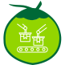

- “Zero Waste” Goals in the Value Chain
- Sustainable Raw Material Sources (intercropping models; the coconut embryo)
VISION
LEADING INNOVATIVE COCONUT SOLUTIONS NATURAL
By enhancing investment in R&D and cutting-edge technologies, we are committed to empowering the coconut value chain and building a smart agricultural ecosystem grounded in the “Zero Waste Strategy - No Waste, No Emissions” principle.
A sustainable production model rooted in stable, high-quality raw material sources and the “Zero Waste” principle
Integration of advanced technologies

Premium quality, diverse and distinct product offerings
Global presence with a robust export network